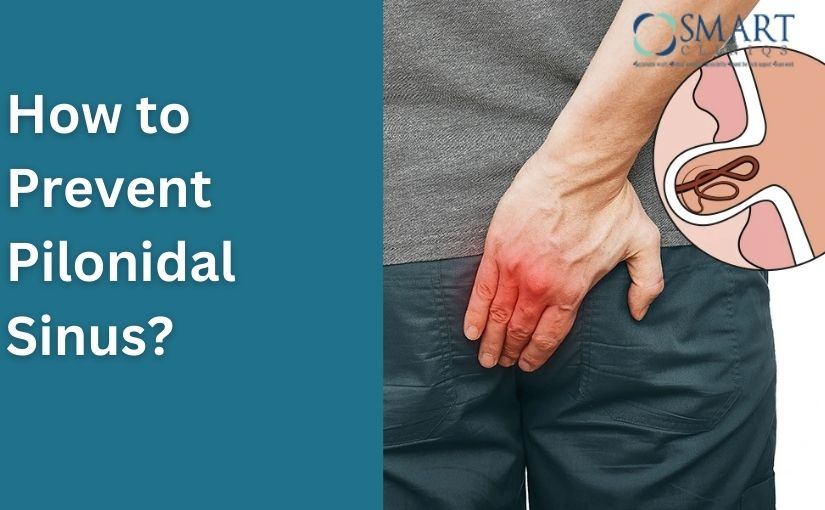

If you or someone in your family has suffered from a pilonidal sinus, one common and important question is how to prevent pilonidal sinus from developing or coming back. A pilonidal sinus can be painful, embarrassing, and recurrent if proper care is not taken. The good news is that many cases can be prevented with simple daily habits, good hygiene, and lifestyle changes.
In this detailed guide, we will explain pilonidal sinus prevention, covering causes, risk factors, daily care tips, hair control, sitting habits, exercise, and how to prevent recurrence after treatment. This information is also useful for patients seeking Pilondal Sinus treatment in Delhi under the guidance of experienced specialists like Dr. Atul Peters.
How to Prevent Pilonidal Sinus?
In this detailed guide, we will explain pilonidal sinus prevention, covering causes, risk factors, daily care tips, hair control, sitting habits and exercise.
Book Your Appointment TodayUnderstanding Pilonidal Sinus
A pilonidal sinus is an abnormal small tunnel or cavity that forms in the skin, most commonly near the tailbone (coccyx) at the top of the buttock crease. The word pilonidal means “nest of hair,” which explains the nature of this condition—these sinuses often contain loose hair, dead skin cells, and debris trapped beneath the skin. Over time, this trapped material can lead to infection, swelling, and the formation of a painful abscess.
It often contains:
- Hair
- Dirt
- Dead skin
Over time, this area can get infected and form a painful abscess with swelling, redness, and pus discharge.
Why Does Pilonidal Sinus Occur?
Before learning how to prevent pilonidal sinus, it is important to understand why it happens.

Common causes include:
- Excess body hair
- Tight clothing
- Prolonged sitting
- Poor hygiene
- Sweating
- Obesity
- Repeated friction near the tailbone
Hair penetrates the skin due to friction and pressure, leading to infection and sinus formation.
How to Prevent Pilonidal Sinus
1. Maintain Good Personal Hygiene
Good hygiene is the most important natural step in preventing a pilonidal sinus. The area around the tailbone should be cleaned daily using mild soap and water to remove sweat, dirt, and bacteria. After bathing, it is essential to dry the area completely, as moisture trapped in the buttock cleft creates an ideal environment for infection. Regular hygiene reduces bacterial growth and lowers the chances of hair penetrating the skin.
2. Keep the Area Hair-Free
Excess hair in the tailbone region is one of the main causes of pilonidal sinus formation. Naturally, preventing this condition involves keeping the area as hair-free as possible through safe trimming or shaving. Removing hair reduces friction and prevents loose hair from getting embedded into the skin. Consistent hair control is especially important for people with thick or coarse body hair.
3. Avoid Prolonged Sitting
Sitting for long hours puts constant pressure on the tailbone area, increasing friction and the risk of hair being pushed into the skin. To naturally prevent pilonidal sinus, it is important to take short breaks every 30 to 45 minutes, stand up, stretch, or walk around. Using a soft cushion while sitting can also help reduce direct pressure on the affected area.
4. Wear Loose and Breathable Clothing
Tight clothing increases sweating and friction around the buttock cleft, which can irritate the skin and encourage infection. Wearing loose-fitting, breathable cotton clothing allows better air circulation and keeps the area dry. This simple clothing choice plays a significant role in reducing skin irritation and preventing pilonidal sinus naturally.
5. Maintain a Healthy Body Weight
Excess body weight can deepen the buttock cleft, increasing sweating, friction, and hair accumulation. Maintaining a healthy weight through a balanced diet and regular physical activity helps reduce pressure on the tailbone area. Weight control not only lowers the risk of pilonidal sinus but also supports overall skin health and immunity.
Can Exercise Prevent Pilonidal Sinus?
Many people ask: can exercise prevent pilonidal sinus? The answer is yes, indirectly.
How Exercise Helps:
- Helps maintain healthy weight
- Improves blood circulation
- Reduces long sitting hours
Best Practices:
- Avoid exercises that cause excessive friction initially
- Wear sweat-absorbing clothing
- Shower after workouts
However, avoid cycling or activities that put direct pressure on the tailbone for long periods.
How to Prevent Pilonidal Sinus Recurrence
Once treated, the risk of recurrence exists if preventive care is ignored. Knowing how to prevent pilonidal sinus recurrence is crucial.
Key Steps After Treatment:
- Regular hair removal
- Daily hygiene routine
- Avoid prolonged sitting
- Follow doctor’s instructions carefully
- Attend follow-up visits
Patients treated surgically must be extra cautious in the first few months.
Common Mistakes That Increase Risk

Avoid these common mistakes:
- Ignoring early symptoms
- Poor hygiene
- Not removing hair after treatment
- Sitting for long hours without breaks
- Wearing tight clothing
Correcting these habits helps in effective pilonidal sinus prevention.
Prevention Tips for Teenagers and Young Adults
Since pilonidal sinus is common in young people:
- Teach hygiene habits early
- Encourage physical activity
- Limit screen time and long sitting
- Promote a healthy weight
Early prevention is the best protection.
How to Prevent Pilonidal Sinus?
In this detailed guide, we will explain pilonidal sinus prevention, covering causes, risk factors, daily care tips, hair control, sitting habits and exercise.
Book Your Appointment TodayConclusion
Understanding how to prevent pilonidal sinus is the key to avoiding pain, infection, and repeated treatments. Simple habits like good hygiene, hair removal, healthy weight management, and avoiding prolonged sitting can make a big difference. For those who have already been treated, following preventive care strictly is essential to avoid recurrence.
If symptoms persist or recur, timely medical guidance from experts offering Pilondal Sinus treatment in Delhi, such as Dr. Atul Peters, ensures proper care and long-term relief. Prevention, awareness, and early action are the best ways to stay pilonidal sinus–free.